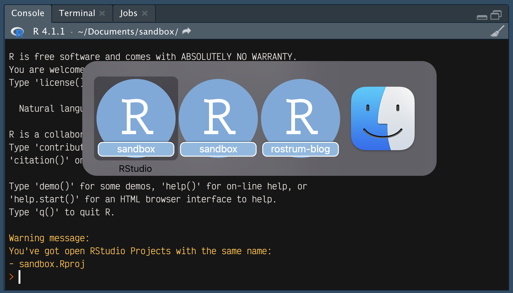

check_rproj_dupes <- function(speak = FALSE) {
os <- .Platform$OS.type
if (os == "unix") {
ps_out <- system("ps -e", intern = TRUE)
ps_rproj <- ps_out[grepl(".Rproj", ps_out)]
ps_split <- strsplit(ps_rproj, "\\s")
rproj_paths <- lapply(ps_split, function(x) x[grepl(".Rproj$", x)])
rproj_basenames <- lapply(rproj_paths, basename)
rproj_dupes <- sort(unlist(rproj_basenames[duplicated(rproj_basenames)]))
}
if (os == "windows") {
stop("Sorry, check_rproj_dupes() doesn't work on Windows yet :-(")
}
if (length(rproj_dupes) > 0) {
if (speak & os == "unix") {
dupes_string <- paste(rproj_dupes, collapse = ", ")
dupes_string_say <- gsub("\\.Rproj", " dot ar proj ", dupes_string)
message <- paste(
"say ha, you fool, you have more than one open RStudio Project with",
ifelse(length(rproj_dupes) == 1, "this name:", "these names:"),
dupes_string_say
)
system(message)
}
warning(
"You've got open RStudio Projects with the same name:\n",
paste("-", rproj_dupes, collapse = "\n"), "\n",
call. = FALSE
)
}
}
check_rproj_dupes()
rm(check_rproj_dupes)
tl;dr
I keep opening more than one instance of the same RStudio Project and it’s annoying me, so I wrote a function to warn me on startup.
Double trouble
Sometimes I write code in an RStudio Project and then go and do something else. My memory is terrible, so later I might open a second instance of the same project and wonder what happened to that code I’d written before.
Is there a way to stop this from happening? Maybe there’s a setting in RStudio or something? Maybe I should just Google it?
Nah, instead I hacked together a little function that can be run on startup to warn me—via both text and audio—if I have multiple RStudio sessions open with the same name. It’s called check_rproj_dupes().
Note that the function checks which OS you’re using with .Platform$OS.type, with the hope that one day I (or you) will write some corresponding code that will work on Windows. I don’t use Windows, so I can’t test anything.
The code has a few steps:
- Pass the
ps(process status) command with flag-e(show all running processes) to the shell via thesystem()function, which is captured in a vector whenintern = TRUE - Use
grepl()to isolate the strings that contain the ‘.RProj’ RStudio Project extension - Extract the full paths to the .RProj files
- Extract the basenames from the paths (i.e. just the filename for the .RProj)
- Compare the basenames to see which are duplicated
- Display any matches in a warning message and, if
speak = TRUE, read aloud a warning message that’s passed to thesayfunction viasystem()
Yeah, this could be simplified, but I’m no code golfer. I just want it to work and for it to be pretty obvious what it’s doing.
Here it is (or see it in a GitHub Gist, where you can write your suggestions for how to improve it):
How would you actually use this though?
You can add it to your ‘hidden’ .Rprofile file, which is a place that you can store code that runs whenever RStudio is started.1 Perhaps the easiest way to open it is with usethis::edit_r_profile(). Then you can paste in all the code from the block above.2
On startup, the code will run and if there’s no problem, then you’ll see no message. No news is good news.
But let’s say I had opened sandbox.Rproj earlier and was now opening the file again. In this second RStudio instance, the usual R startup message will print, followed by a warning:
Warning message:
You've got open RStudio Projects with the same name:
- sandbox.Rproj If speak = TRUE then you’ll also hear this:
So hopefully now I will be less confused when trying to manage my RStudio sessions. At worst I’ll be shocked to hear the creepy computer voice tell me I’m a fool.
Environment
Session info
Last rendered: 2023-06-29 23:59:43 CESTR version 4.3.1 (2023-06-16)
Platform: aarch64-apple-darwin20 (64-bit)
Running under: macOS Ventura 13.2.1
Matrix products: default
BLAS: /Library/Frameworks/R.framework/Versions/4.3-arm64/Resources/lib/libRblas.0.dylib
LAPACK: /Library/Frameworks/R.framework/Versions/4.3-arm64/Resources/lib/libRlapack.dylib; LAPACK version 3.11.0
locale:
[1] en_US.UTF-8/en_US.UTF-8/en_US.UTF-8/C/en_US.UTF-8/en_US.UTF-8
time zone: Europe/Zurich
tzcode source: internal
attached base packages:
[1] stats graphics grDevices utils datasets methods base
loaded via a namespace (and not attached):
[1] htmlwidgets_1.6.2 compiler_4.3.1 fastmap_1.1.1 cli_3.6.1
[5] tools_4.3.1 htmltools_0.5.5 rstudioapi_0.14 yaml_2.3.7
[9] rmarkdown_2.22 knitr_1.43.1 jsonlite_1.8.5 xfun_0.39
[13] digest_0.6.31 rlang_1.1.1 evaluate_0.21 Reuse
CC BY-NC-SA 4.0